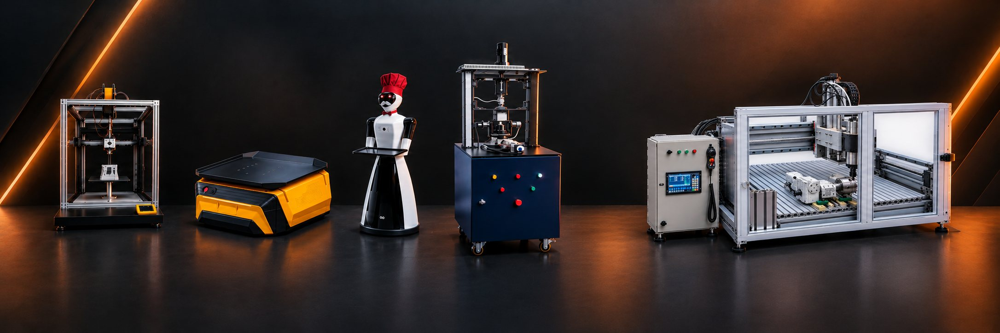
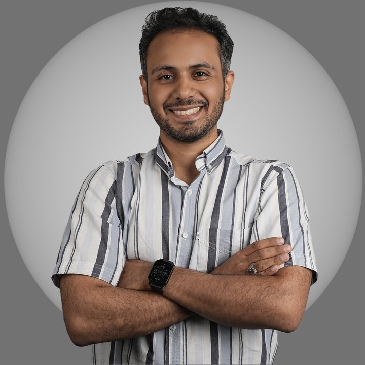

رباتهای صنعتی، ماشینآلات سفارشی و اتوماسیون.
طراحی مکانیکی ماشینها و رباتهای صنعتی را انجام میدهم و ساخت، مونتاژ و راهاندازی آنها را هم پیگیری میکنم. کارشناسی ارشد طراحی کاربردی از دانشگاه صنعتی شریف.
مهمترین دستاوردهای علمی و فناورانه.
یکی از ۱۲ برگزیدهی بخش فناوران و مخترعان، برای طراحی و ساخت دستگاه تست تقید و پایداری پروتز زانو در شش درجهی آزادی (مطابق استاندارد ASTM F1223)؛ همراه با تقدیر هیئترئیسهی دانشگاه صنعتی شریف و اهدای مدال نقرهی شریف — ۱۴۰۵.
برای طراحی مکانیکی رباتهای سورتر پستی — ۱۴۰۳.
برای دستگاه تست تقید و پایداری پروتز زانو، همراه با گواهی یونسکو و تقدیر رئیسجمهور — ۱۴۰۱.
عنوان برترین پایاننامهی فناورانهی دانشکدهی مهندسی مکانیک — ۱۴۰۰.
برای تیم رباتهای هوشمند پستی (تنسور) — ۱۴۰۳.
برای رباتهای هوشمند پستی (تنسور) — ۱۴۰۳.
از میان بیش از ۱۰٬۰۰۰ شرکتکننده؛ و رتبهی ۱۱ مرحلهی نهایی المپیاد علمی دانشجویی مکانیک — ۱۳۹۷.
در حوزههای «الکترونیک و رباتیک» و «سلامت و فناوری پزشکی».
«المپیادهای فیزیک در ایران» — نشر خوشخوان، ۱۳۹۷.
من حسن نصیری خونساری هستم؛ مهندس مکانیک و مکاترونیک. کارم طراحی مکانیکی ماشینها و رباتهای صنعتی و پیگیری ساخت، مونتاژ و راهاندازی آنهاست.
کارشناسی ارشد مهندسی مکانیک (طراحی کاربردی) را در دانشگاه صنعتی شریف زیر نظر دکتر محمد دورعلی و کارشناسی را در دانشگاه علم و صنعت ایران گذراندم. دو بار مقام دوم جشنوارهی جوان خوارزمی را کسب کردهام و برگزیدهی جشنوارهی البرز در بخش فناوران و مخترعان شدهام.
از رباتهای سورتر پستی که نسلهای اول و دومش در تهران و کرمانشاه به کار افتاد و نسل سومش در تیراژ ۲۰۰ دستگاه به تولید رسید، تا دستگاه تست پروتز زانو، تغذیهکنندهی پودر برای رسوب مستقیم فلز، پنج پرینتر سهبعدی صنعتی و ناوگان هفتتایی ربات خدماتی.
این روزها در کارون، طراحی قطعه و مجموعه، بازرسی ابعادی و جوش، و مدیریت کارگاههای ماشینکاری و ساخت بیرونی را بر عهده دارم؛ تا امروز بیش از ۸٬۰۰۰ قطعهی صنعتی تحویل شده است.
مقالهی منتشرشده در مجلهی Scientific Reports.
بررسی رفتار اصطکاکی میان استخوان و ایمپلنتهای تیتانیومی (Ti6Al4V) ساختهشده با روش ذوب لیزری انتخابی (SLM). در این پژوهش، ضریب اصطکاک برای ترکیبهای مختلفِ چگالی استخوان، بافت سطح ایمپلنت و میزان بار اندازهگیری شد — نتایجی که به طراحی ایمپلنتهای ارتوپدی سفارشی و متناسب با ویژگیهای استخوانی هر بیمار کمک میکند.
طراحی قطعه و مجموعه، بازرسی ابعادی و جوش، و مدیریت کارگاههای ماشینکاری و ساخت بیرونی؛ بیش از ۸٬۰۰۰ قطعهی صنعتی تحویلشده.
تدریس دروس «روشهای تولید» و «فیزیک ۲» در نیمسال دوم ۱۴۰۲-۱۴۰۳.
نخستین پروژه، ساخت ربات متحرک با چرخهای همهجهته بود که در بخش مکانیک و الکترونیک آن کار کردم.
طراحی و توسعهی مکانیکی رباتهای صنعتی؛ مدیریت ساخت ۵۰ ربات سورتر برای مرکز توزیع مرسولات چهارراه لشکر و ۳۰ ربات برای مرکز توزیع کرمانشاه، هماهنگی کارگاهها و سرپرستی تیم مونتاژ و یکپارچهسازی.
سیگما: نقشهکشی قطعات با CATIA. صدرا: کنترل موقعیت یک میز سهدرجهآزادی.
برای دیدن تصویر و توضیحات هر پروژه، روی آن کلیک کنید.
برای همکاری در پروژههای طراحی، ساخت یا اتوماسیون میتوانید از فرم زیر یا راههای ارتباطی دیگر استفاده کنید.
راههای ارتباطی دیگر: